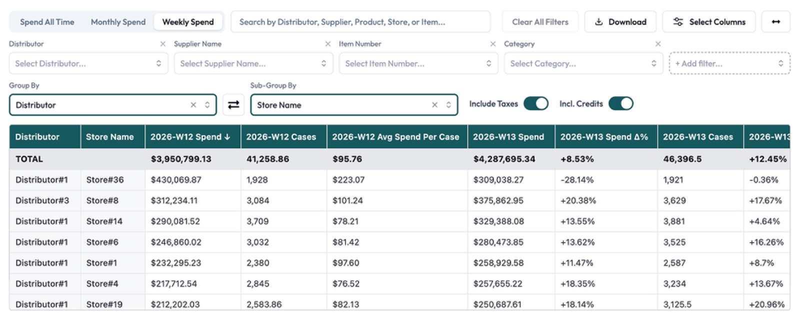
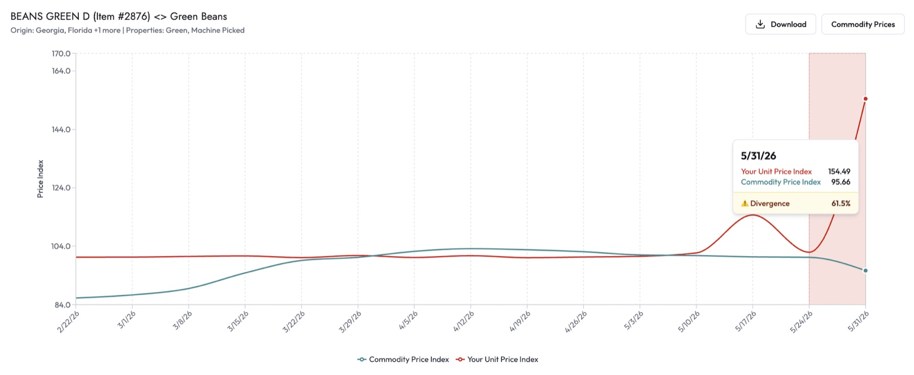
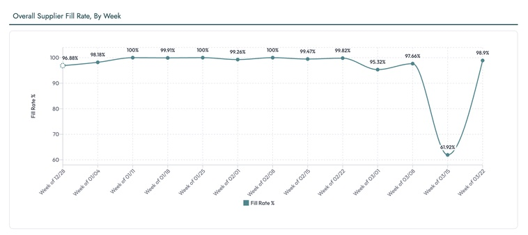
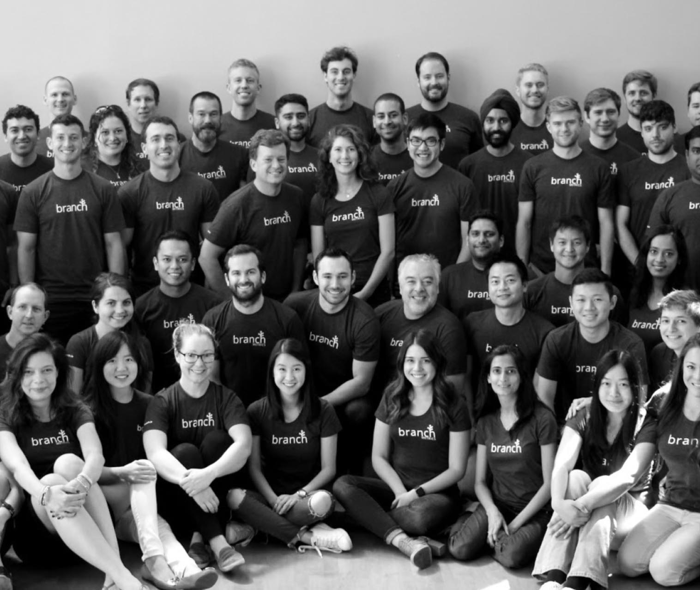
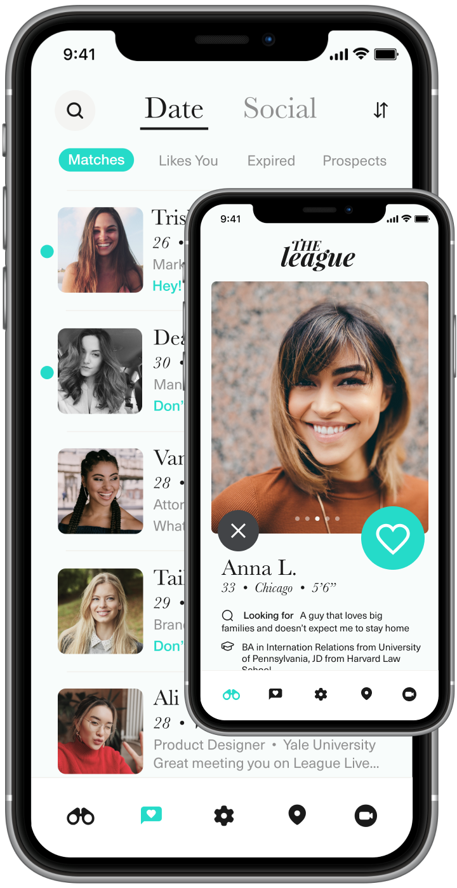
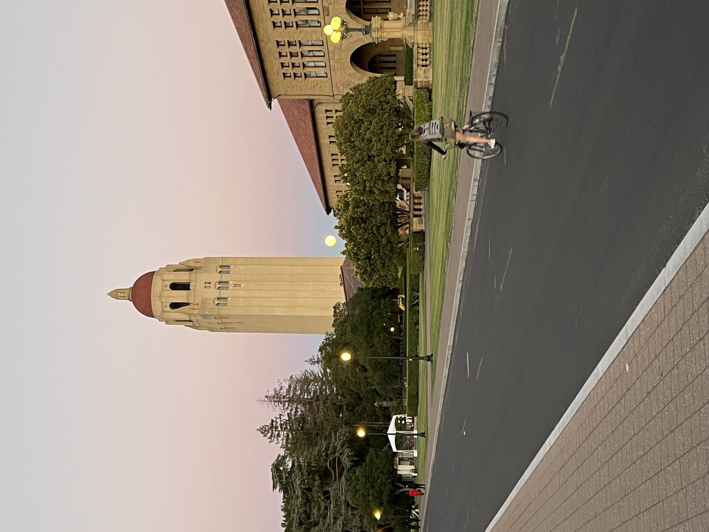

Ready to build
Taking on 0-to-1 builds and fractional CTO work. An engineer's instincts and a product leader's judgment, for teams ready to ship.
Chelsea, New York
Product leader, two-time technical cofounder; NYC-based.
Puerto Natales, Chilean Patagonia
Taking on 0-to-1 builds and fractional CTO work. An engineer's instincts and a product leader's judgment, for teams ready to ship.
Back to building from zero, this time as technical cofounder. I built the entire product solo: a Python data-ingestion pipeline on AWS, Postgres storage, and a Next.js web app on Vercel. It turns messy supply-chain data into insights for restaurant teams. Sightline's customers include national operators like Din Tai Fung and Bonchon. I built it over a year, then hired and onboarded the engineers who run it now.



Three views of Sightline OS, as published on sightlineos.com.
Chelsea, New York
After eight years at Branch Metrics I took a deliberate break, my first real pause since Stanford 10 years prior. I then spent 2024 in cofounder dating: meeting founders, pressure-testing ideas, looking for the right problem and the right partner. That search led to Sightline.
Pescadero, CA
Joined Branch Metrics pre-Series A as one of the first few engineers. Spent two years in engineering building core product and Branch's first paid products, then moved into product for the next six, eventually running the team. As a PM, I led the Facebook attribution integration that anchored our ads business and became the blueprint for the Google, Snap, and TikTok integrations that followed. Eight years: from no revenue to $100M ARR; from a handful of people to 500+.

San Francisco
As the sole engineer, I built the entire product end to end: the iOS app and the LinkedIn/Facebook screening engine that became the app's signature. We launched in San Francisco in 2014 to the first thousands of users. The app was later acquired by Match Group for ~$30M.

Main Quad, Stanford University
Transferred to Stanford and earned a BA in International Relations. I took three computer science classes. The third, "iPhone & iPad Programming," set me on the path to becoming a software developer.
